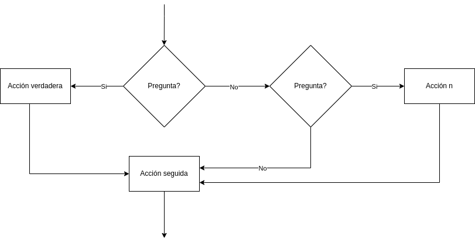
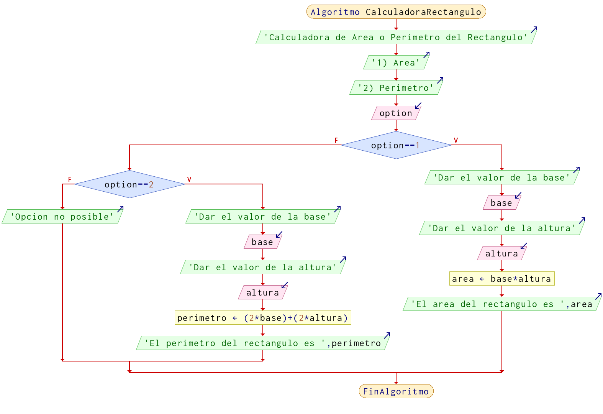

Comparaciones o Decisiones (if-else)
Previamente ya vimos como se realiza una decision, pero ahora se complementa esta decision en un formato en el cual forzosamente si no se cumple la decision, es decir, si no es verdadera tiene que realizar alguna acción y posteriormente continuar.
Otra manera de decirlo, es que tiene que realizar una acción, en cada caso antes de continuar con la siguiente acción.

Las preguntas pueden estar anidadas, es decir, después de la pregunta puede haber otro estructura que tenga que realizar una de las dos acciones y posteriormente continuar.

Ejemplos
Ejemplo 1
Preguntar al usuario su edad e imprimir si es mayor o menor de edad en función de la edad.
Pseudocódigo
Algoritmo MenorMayorEdad
Imprimir "Dar la edad"
Leer edad
Si edad >= 18 Entonces
Imprimir "Eres mayor de edad"
Sino
Imprimir "Aun eres menor de edad"
FinSi
FinAlgoritmo

Ejemplo 2
Solicitar un numero e indicar si es par o impar.
Pseudocódigo
Algoritmo ParImpar
Escribir 'Dar un numero para conocer si es par o impar'
Leer numero
Si numero % 2 == 0 Entonces
Escribir 'El numero es par'
Sino
Escribir 'El numero es impar'
FinSi
FinAlgoritmo
Diagrama de flujo

Ejemplo 3
Calculadora para obtener el área o el perímetro de un rectángulo, dependiendo del usuario, en caso de que de una opción que no existe mande un mensaje indicando "Opción no posible"
Pseudocódigo
Algoritmo CalculadoraRectangulo
Escribir 'Calculadora de Area o Perimetro del Rectangulo'
Escribir '1) Area'
Escribir '2) Perimetro'
Leer option
Si option == 1 Entonces
Imprimir "Dar el valor de la base"
Leer base
Imprimir "Dar el valor de la altura"
Leer altura
area = base * altura
Imprimir "El area del rectangulo es ", area
Sino
Si option == 2 Entonces
Imprimir "Dar el valor de la base"
Leer base
Imprimir "Dar el valor de la altura"
Leer altura
perimetro = (2*base) + (2* altura)
Imprimir "El perimetro del rectangulo es ", perimetro
Sino
Imprimir "Opcion no posible"
FinSi
FinSi
FinAlgoritmo
Diagrama de flujo

Nota: No es la única forma en la que se pueden realizar estos ejercicios, recuerda que lo importante es resolver el problema, que hayan mas o menos pasos, diferentes formulas, etc, no significa que este mal.